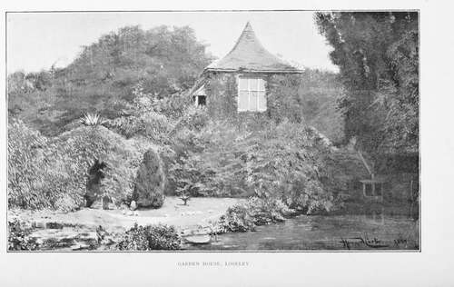

Early Tudor Gardens. Part 2
Description
This section is from the book "A History Of Gardening In England", by Alicia Amherst. Also available from Amazon: A History Of Gardening In England.
Early Tudor Gardens. Part 2
" My galleries were fayre, both large & longe To walk in them when that it liked me beste *****.
With arbours & alleys so pleasant & so dulse The pestilent airs with flavours to repulse".
I do not know of a single example of a gallery or arbour, of this description, in existence. They were made of perishable material, such as wood-trellis planted with creepers, vines, roses, or honeysuckle, therefore even those which were not pulled down purposely, must have been long ago destroyed by time. And what is also much to be regretted is, that few, if any, examples are to be found in English illuminated books, although pleuty of pictures occur in foreign MSS. of this period, especially French and Flemish. The scarcity of English examples is no doubt partly owing to the destruction of religious books at the time of the Reformation. They are found chiefly in the calendars at the beginning of missals, or Books of Hours, where the miniature for the month of May is frequently a garden, or the garden of the day is introduced, in the illustration of some sacred subject. The gallery ran along the outer wall of the garden, the wall forming one side, posts of wood in a series of arches the other, while the pathway between the wall and the posts was covered in, either with creepers and wood-work, or something more substantial, and affording better shelter. Sometimes the gallery followed the wall round three sides, but it seems to have been the more usual custom to have it on one side only, and it frequently afforded a sheltered walk from the house to the arbour or mount.
Edward Stafford, Duke of Buckingham, during the first years of the sixteenth century, began to lay out very extensive gardens at Thornbury, in Gloucestershire, but he was accused of treason, and hurried to the scaffold, before carrying out his plan. Among the State papers of the time, May, 1521, there is a survey of his lands, and the following extracts appear in it, under the heading of " gardens," and are illustrative of the fashion of galleries. " On the south side of the inner ward [of the castle] is a proper garden, and about the same a goodly gallery conveying above and beneath from the principal lodgings, both to the chapel and parish church. The utter (outer) part of the said gallery being of stone embattled, and the inner part of timber covered with slate. On the east side of the said castle or manor, is a goodly garden to walk in, closed with high walls, embattled. The conveyance thither is by the gallery above and beneath, and by other privy ways. Besides the same privy garden is a large and a goodly orchard, full of young graffes well loaden with fruit, many roses and other pleasures. And in the same orchard, are many goodly alleys to walk in openly. And round about the same orcharde is conveyed on a good height other goodly alleys with roosting places, covered thoroughly with white thorne and hasel. And without the same, on the utter part, the said orchard is enclosed with sawin pale (sawn palings) and without that ditches and quickset hedges." ..." From out of the said orchard, are divers posterns in sundry places at pleasure to go and enter into a goodly park newly-made." The house and gardens were left to fall into ruins, after Queen Elizabeth's time, and not a trace of the old garden remains.*
Another example of an arbour or " roosting-place," was one made for Elizabeth of York. " 10 July 1502 Item payed to Henry Smith clerc of the Castle of Wyndsor for money by him payed to a certain labourer to make an herbour in the little park of Wyndsor for a banket for the Queen iiijs. viijd." Again, in the eighteenth year of Henry VII., five shillings were paid for making an arbour at Baynarde's Castle, in London.*
* The outer castle wall alone remained, and it was rebuilt, and the present gardens laid out about fifty years ago, by the father of the present owner, Mr. Stafford Howard.
The ordinary arbour was still like those described in earlier times by Chaucer, with a turfed seat, and trellis covered with climbing plants. One is thus spoken of by a poet of the Tudor period † :—
" The clowdis gan to clere, the myst was rarifiid In an herber I saw, brought where I was, There birdis on the brere sange on euery syde :— With alys ensandid about in com pas The bankis enturfid with singular solas Enrailed with rosers, and vinis engrapid ;— It was a new comfort of sorowis escapid".
Other resting-places were arranged along the garden-walls, in the form of shady nooks and corners with grass banks to serve as seats, such as that of which More, in his Utopia, makes mention, when he writes:—"We all went to my house, and entering into the garden, sat down on a green bank, and entertained one another in discourse." The arbour or garden-house was sometimes of brick, or stone, built like a turret into the wall ; an early example of arbours like this exists at Loseley, in Surrey. There were originally four houses, one at each corner of the garden-wall, and three of these remain. Another interesting garden of this date is at the Palace, Hadham, in Hertfordshire, which, for many hundred years, belonged to the Bishops of London. It was also the dwelling-place of Katherine, widow of Henry V., after her marriage with Owen Tudor, and it was here that Edmund, father of Henry VII., was born. The garden at the present day is surrounded on two sides by a wall, while the other side is protected by a high yew hedge, three yards thick.
At the beginning of the sixteenth century, a new flower-bed was adopted, as well as the straight-railed beds. This was the "knotted bed," or knots. They were laid out in curious and complicated geometrical patterns. By the year 1520, the style was in common use, and most of our English gardens could boast of some kind of novel knotted bed. Cavendish writes of Hampton Court, it was " so enknotted it cannot be expressed." The earth in the knots was either raised a little, being kept in its place by borders of bricks and tiles, or, as was more often the case, it was on the same level as the paths, and then the divisions were made with box, thrift, and so on. Generally, the beds were planted inside their thick margins, with ornamental flowers or small shrubs, somewhat as "carpet a proper knot to be caft in the quarter of a Garden, or other-wife,as there is sufficient roome beds" are now laid out; but, sometimes, instead of plants, they were filled with variously coloured earths. In the household accounts of the Duke of Buckingham, in 1502, there is an entry of 3s. 4d. being paid to "John Wynde, gardener, for diligence in making knottes in the Duke's garden." And in the same year, among the accounts of the fifth Earl of Northumberland, a gardener is mentioned as being employed to "attend hourly in the garden for setting of erbis, and clypping of knottes, and sweeping the said garden cleaner hourly." The designs of these knots were very varied. They were either geometrical patterns, or fanciful shapes of animals ; the intricate geometric designs being evidently the most popular, as they occur most frequently in books. (See illustration.) The other style is described in the following poem*:—.
* Wardrobe Accounts. † Skelton, Garlande of Lanrell.
Knot from the gardener's labyrinth.
Continue to: